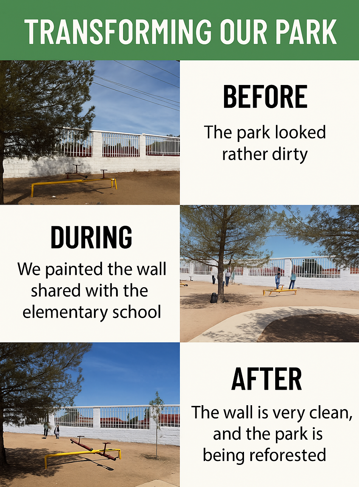

WELCOME TO MY SIMPLE PAST WEB PAGE
Simple Past
The simple past is a verb tense used to describe completed actions that happened at a specific time in the past. Regular verbs end in "-ed," while irregular verbs have unique forms.
For example:
- Regular verbs: play → played, watch → watched
- Irregular verbs: go → went, eat → ate
Affirmative Statements
To form affirmative statements in the simple past, use the past tense form of the verb.
- She visited her grandmother last weekend.
- They played soccer in the park.
- We watched a great movie last night.
Negative Statements
To form negative sentences, use "did not" (or "didn't") + the base form of the verb.
- He did not go to school yesterday.
- They didn’t watch the movie.
- She didn’t like the food.
Interrogative Statements
To form questions, use "Did" + subject + base form of the verb.
- Did you see the new episode?
- Did she visit her grandparents last weekend?
- Did they enjoy the party?
Time Adverbs
Time adverbs help us indicate when an action happened. Some common adverbs used with the simple past are:
- Yesterday
- Last week/month/year
- A few days ago
- In 2010
- When I was a child
- Once, twice, three times
Click here to see the presentation
First Term Video
PARK RESTORATION INFOGRAPHIC
